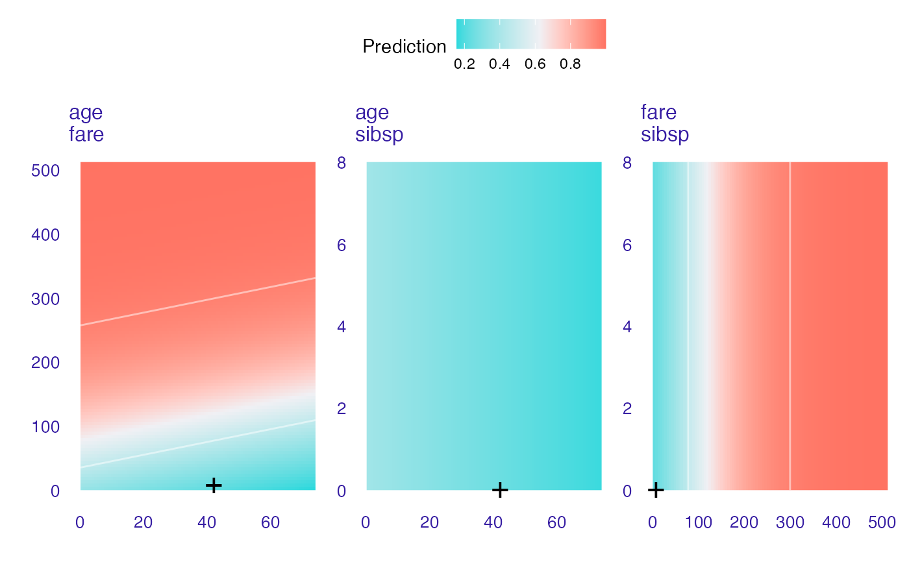
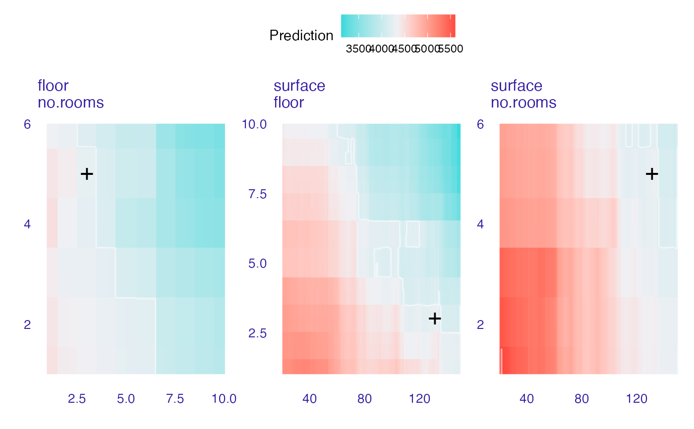

This function calculates ceteris paribus profiles for grid of values spanned by two variables. It may be useful to identify or present interactions between two variables.
ceteris_paribus_2d(explainer, observation, grid_points = 101, variables = NULL)a model to be explained, preprocessed by the DALEX::explain() function
a new observation for which predictions need to be explained
number of points used for response path. Will be used for both variables
if specified, then only these variables will be explained
an object of the class ceteris_paribus_2d_explainer.
Explanatory Model Analysis. Explore, Explain, and Examine Predictive Models. https://ema.drwhy.ai/
library("DALEX")
library("ingredients")
model_titanic_glm <- glm(survived ~ age + fare,
data = titanic_imputed, family = "binomial")
# \donttest{
explain_titanic_glm <- explain(model_titanic_glm,
data = titanic_imputed[,-8],
y = titanic_imputed[,8])
#> Preparation of a new explainer is initiated
#> -> model label : lm ( default )
#> -> data : 2207 rows 7 cols
#> -> target variable : 2207 values
#> -> predict function : yhat.glm will be used ( default )
#> -> predicted values : No value for predict function target column. ( default )
#> -> model_info : package stats , ver. 4.2.2 , task classification ( default )
#> -> predicted values : numerical, min = 0.1707237 , mean = 0.3221568 , max = 0.9983551
#> -> residual function : difference between y and yhat ( default )
#> -> residuals : numerical, min = -0.9519492 , mean = 4.78827e-11 , max = 0.8167072
#> A new explainer has been created!
cp_rf <- ceteris_paribus_2d(explain_titanic_glm, titanic_imputed[1,],
variables = c("age", "fare", "sibsp"))
head(cp_rf)
#> y_hat new_x1 new_x2 vname1 vname2 label
#> 1 0.3545941 0.1666667 0.000000 age fare lm
#> 1.1 0.3719860 0.1666667 5.120607 age fare lm
#> 1.2 0.3897159 0.1666667 10.241214 age fare lm
#> 1.3 0.4077422 0.1666667 15.361821 age fare lm
#> 1.4 0.4260202 0.1666667 20.482428 age fare lm
#> 1.5 0.4445026 0.1666667 25.603035 age fare lm
plot(cp_rf)
#> Warning: The following aesthetics were dropped during statistical transformation: fill
#> ℹ This can happen when ggplot fails to infer the correct grouping structure in
#> the data.
#> ℹ Did you forget to specify a `group` aesthetic or to convert a numerical
#> variable into a factor?
#> Warning: `stat_contour()`: Zero contours were generated
#> Warning: no non-missing arguments to min; returning Inf
#> Warning: no non-missing arguments to max; returning -Inf
#> Warning: The following aesthetics were dropped during statistical transformation: fill
#> ℹ This can happen when ggplot fails to infer the correct grouping structure in
#> the data.
#> ℹ Did you forget to specify a `group` aesthetic or to convert a numerical
#> variable into a factor?
#> Warning: Raster pixels are placed at uneven horizontal intervals and will be shifted
#> ℹ Consider using `geom_tile()` instead.
#> Warning: Raster pixels are placed at uneven horizontal intervals and will be shifted
#> ℹ Consider using `geom_tile()` instead.

library("ranger")
set.seed(59)
apartments_rf_model <- ranger(m2.price ~., data = apartments)
explainer_rf <- explain(apartments_rf_model,
data = apartments_test[,-1],
y = apartments_test[,1],
label = "ranger forest",
verbose = FALSE)
new_apartment <- apartments_test[1,]
new_apartment
#> m2.price construction.year surface floor no.rooms district
#> 1001 4644 1976 131 3 5 Srodmiescie
wi_rf_2d <- ceteris_paribus_2d(explainer_rf, observation = new_apartment,
variables = c("surface", "floor", "no.rooms"))
head(wi_rf_2d)
#> y_hat new_x1 new_x2 vname1 vname2 label
#> 1 5130.866 20 1.00 surface floor ranger forest
#> 2 5130.866 20 1.09 surface floor ranger forest
#> 3 5130.866 20 1.18 surface floor ranger forest
#> 4 5130.866 20 1.27 surface floor ranger forest
#> 5 5130.866 20 1.36 surface floor ranger forest
#> 6 5130.866 20 1.45 surface floor ranger forest
plot(wi_rf_2d)
#> Warning: The following aesthetics were dropped during statistical transformation: fill
#> ℹ This can happen when ggplot fails to infer the correct grouping structure in
#> the data.
#> ℹ Did you forget to specify a `group` aesthetic or to convert a numerical
#> variable into a factor?
#> Warning: The following aesthetics were dropped during statistical transformation: fill
#> ℹ This can happen when ggplot fails to infer the correct grouping structure in
#> the data.
#> ℹ Did you forget to specify a `group` aesthetic or to convert a numerical
#> variable into a factor?
#> Warning: The following aesthetics were dropped during statistical transformation: fill
#> ℹ This can happen when ggplot fails to infer the correct grouping structure in
#> the data.
#> ℹ Did you forget to specify a `group` aesthetic or to convert a numerical
#> variable into a factor?
#> Warning: Raster pixels are placed at uneven horizontal intervals and will be shifted
#> ℹ Consider using `geom_tile()` instead.
#> Warning: Raster pixels are placed at uneven horizontal intervals and will be shifted
#> ℹ Consider using `geom_tile()` instead.

# }